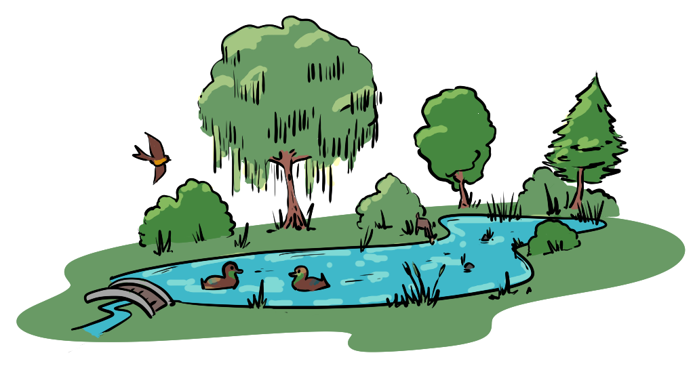
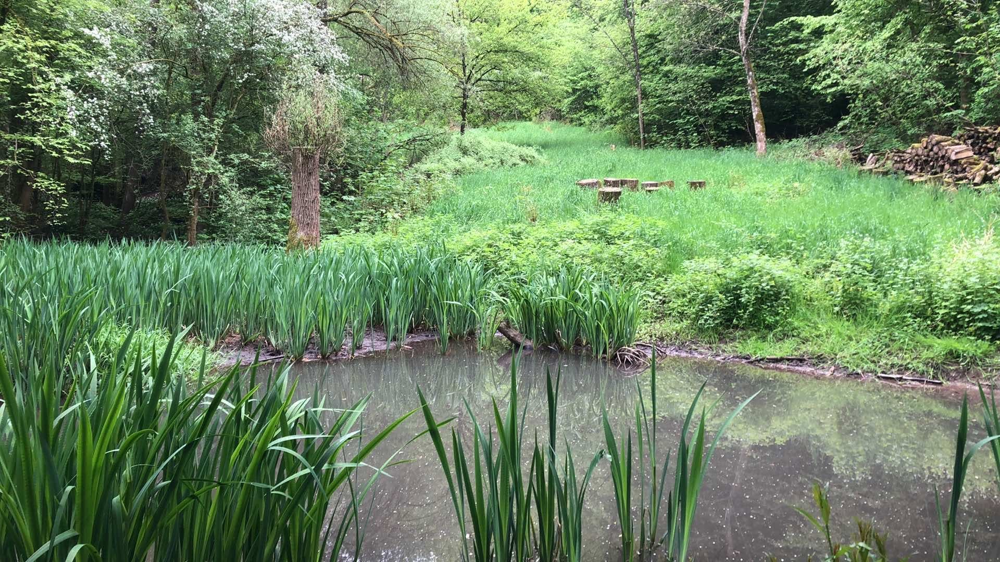
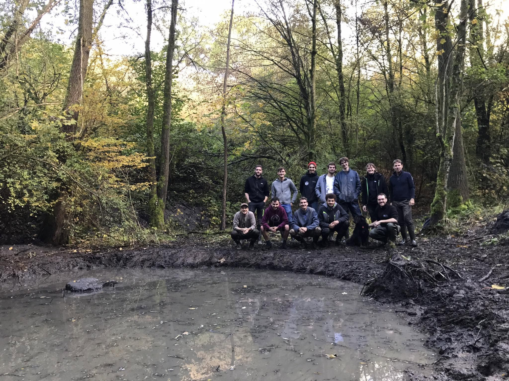

Une oasis de vie 🐸
Au cœur de notre ferme agroécologique, la mare est bien plus qu'un simple point d'eau : c'est un véritable sanctuaire pour la biodiversité locale ! Dès les premiers jours du printemps, elle grouille de vie.
Cet écosystème aquatique attire une faune incroyablement variée. C'est le paradis des grenouilles, des crapauds, des tritons et des libellules. Les oiseaux de la ferme, ainsi que la petite faune sauvage, viennent également s'y abreuver. En créant ce point d'eau, nous offrons un refuge indispensable à de nombreuses espèces souvent menacées par l'assèchement des paysages.
L'eau, notre ressource la plus précieuse 💧
Face au dérèglement climatique et aux étés de plus en plus secs, la gestion de l'eau est un enjeu majeur pour l'agriculture paysanne. La mare agit comme une éponge naturelle dans notre paysage.
Elle permet de stocker l'eau de pluie, de ralentir son ruissellement et de l'infiltrer doucement pour recharger les nappes phréatiques. Autour d'elle, l'évaporation crée un microclimat plus frais et plus humide, bénéfique pour la végétation environnante (comme nos haies et nos cultures) lors des périodes de canicule.
Un formidable terrain de découverte 🌿
Parfaitement complémentaire à notre accueil pédagogique, la mare est le lieu préféré des enfants (et des plus grands) pour l'observation de la nature !
Rien ne vaut le fait de s'accroupir au bord de l'eau pour observer le développement des têtards, écouter le chant des amphibiens ou identifier les plantes aquatiques qui filtrent l'eau naturellement. C'est un outil formidable pour éveiller les consciences à la beauté et à la fragilité des écosystèmes humides.

